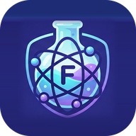
FenLab Kullanım Kılavuzu
1. Başlarken
FenLab, lise fizik, kimya ve biyoloji konularını yaparak öğrenmen için hazırlandı. Slogan: Hata yapmaktan korkma, sonucunu gör.
İlk açılışta kısa, animasyonlu bir tanıtım görürsün (yaklaşık 20 saniye). Sağ üstteki Atla düğmesiyle istediğin an geçebilirsin. Tanıtımı Yardım ekranından yeniden izleyebilirsin.
Tanıtımdan sonra Hesabın ekranı gelir: Misafir olarak devam edebilir ya da Google ile giriş yapabilirsin. Google ile girersen XP'n, görevlerin ve avatarın buluta kaydedilir; başka cihazda aynı yerden devam edersin.
Her yeni ekran ilk girişte 2-3 satırlık kısa bir bilgi kartı gösterir. Anladım dedikten sonra bir daha çıkmaz.
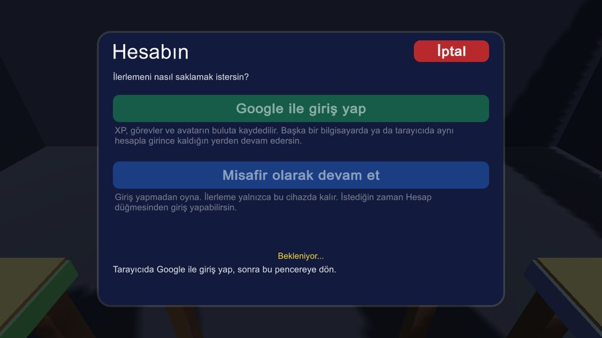
2. Ana ekran
Ana ekranda iki büyük kart var: Keşif Atölyesi (laboratuvarlar ve 3B modeller) ve Konu Anlatımı (dersler, oyunlar, sınavlar).
Altındaki küçük düğmeler: Öğretici, Görevler, Not Defteri, Ayarlar, Kılavuz ve Yardım.
Sol üstteki avatar balonu Avatarım ekranını açar ve bakiyeni gösterir. Sağ üstte Hesap düğmesi, sağ altta Gizlilik ve telif düğmesi bulunur.
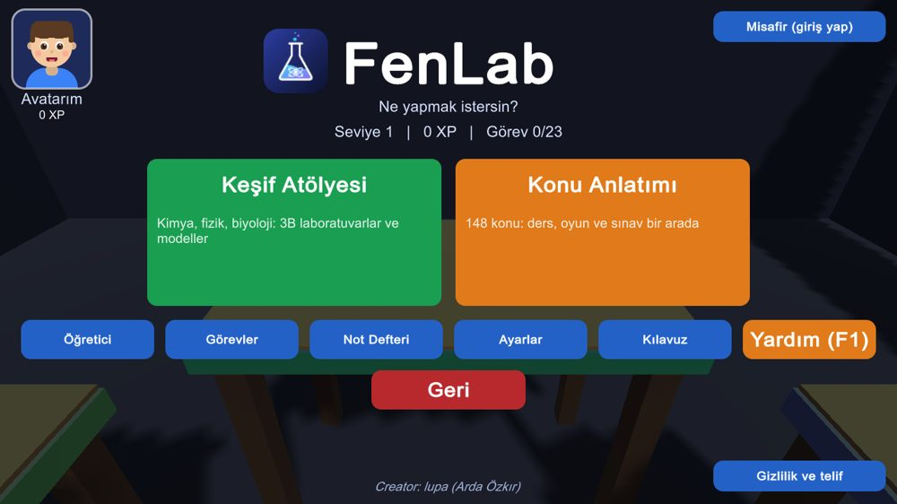
3. Keşif Atölyesi
Üç laboratuvar: Kimya Laboratuvarı, Fizik Atölyesi ve Hücre Kaşifi (biyoloji). Altında 6 model var: Atom Kurucu, DNA Sarmalı, Sinir Hücresi, Molekül Geometrisi (3B) ile Dalga ve Mercek laboratuvarları (2B simülasyon).
Bir karta tıklayınca açılır. Modellerde fareyle sürükleyerek döndürür, tekerlekle yakınlaşırsın. Her modelin içinde küçük bir oyun vardır; ilk başarıda XP verir.
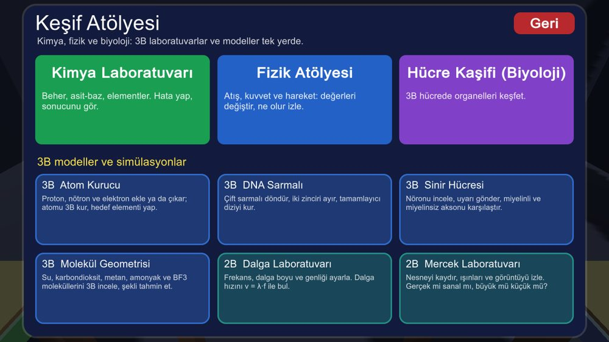
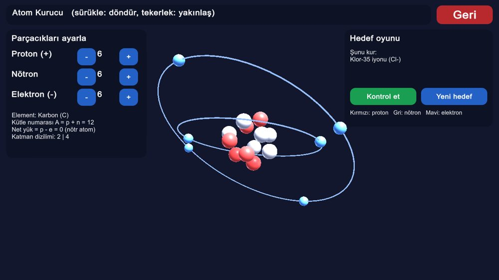
4. Kimya Laboratuvarı
Üstteki arama çubuğuna bir ekipman ya da madde yaz ve Enter'a bas: beher, su, HCl, NaOH, sirke, balon joje, mezür... Ekipman masaya düşer, madde seçili kaba dolar.
Dört masa vardır: Masa 1 deney masası, Masa 2 element deposu (demir, Au, cıva...), Masa 4 hata senaryoları. 1, 2 ve 4 tuşlarıyla masalar arasında dön.
Etrafa bakmak için ok tuşlarını kullan. Tab tuşu fareyle bakmayı açıp kapatır. Sağ tuş basılıyken fareyi sürüklemek de bakar.
Bir kabı tutmak için üstüne gel, sol tuşla sürükle. Tutarken tekerlek kabı uzaklaştırır, Q ve E eğer, F çevirir, X kırar. Katıları (çinko, bakır, sodyum...) kaba atmak için katıyı seç, kaba tıkla ve E'ye bas.
Sol üstte pH ve formül paneli, sağda görevler ve XP çubuğu vardır. Yanlış bir şey yaparsan (örneğin sodyumu suya atmak) ne olduğunu görürsün ve Fen Asistanı kısa bir soru sorar.
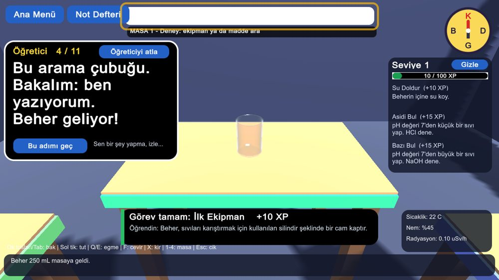
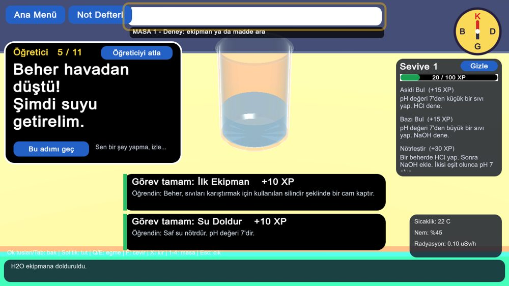
5. Fizik ve Biyoloji
Fizik Atölyesi'nde bir top fırlatırsın: açıyı ve hızı ayarla, Ateş'e bas, yerçekimini değiştir (Ay'da ne olur?). Kutu İtme sekmesinde F = m·a'yı denersin.
Hücre Kaşifi'nde 3B bir hücreyi fareyle döndürür, tekerlekle yakınlaşır ve organellere tıklayarak görevlerini öğrenirsin. Organel Avı ile kendini sınarsın; Bitki Hücresi'ne geçip farkları görürsün.
İlk girişte kısa bir rehber çıkar; Atla ile geçebilirsin.
6. Konu Anlatımı
148 konu başlığı sınıfa (9-12) ve derse göre listelenir. Üstteki düğmelerle Kimya, Fizik, Biyoloji, 1. Dönem, 2. Dönem ve 3B Modeller filtrelerini kullanabilirsin.
Her konuda ünite sırası, dönem ve yazılı sınav tarihi yazar. 2026-27 1. dönem 1. yazılı tarihleri MEB'in resmî takvimindendir ([resmî] yazar). Diğer tarihler tahmindir. Ünite sırası MEB'in resmî numarası değil, konu listesindeki sıradır.
Bir dersi sayfa sayfa oku. Son sayfada Kendini sına (3 şıklı mini sınav) ve Uygulama ve oyun düğmeleri çıkar. Uygulama ekranında o konunun 3B modeli ya da simülasyonu, soru oyunu ve (varsa) sıralama oyunu kart olarak durur.
Üstteki Oyunlar düğmesi sınıf sınıf mini oyunları açar. Geri, derse döndürür.
Dersler ve sorular yapay zekâ yardımıyla taslak olarak hazırlandı; sınav için ders kitabını ve öğretmenini esas al.
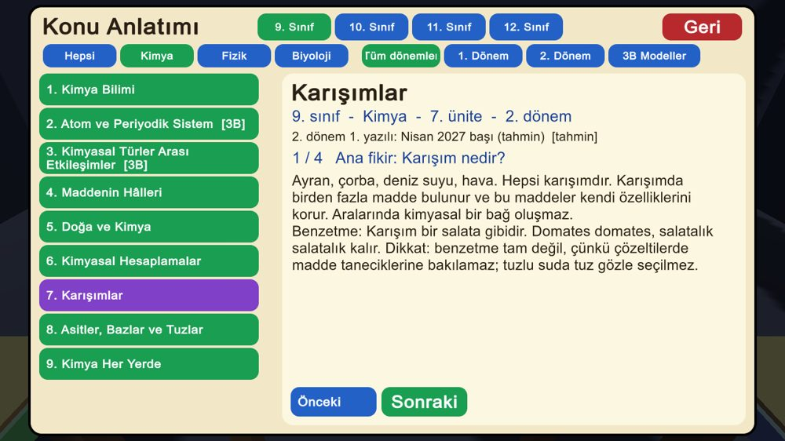
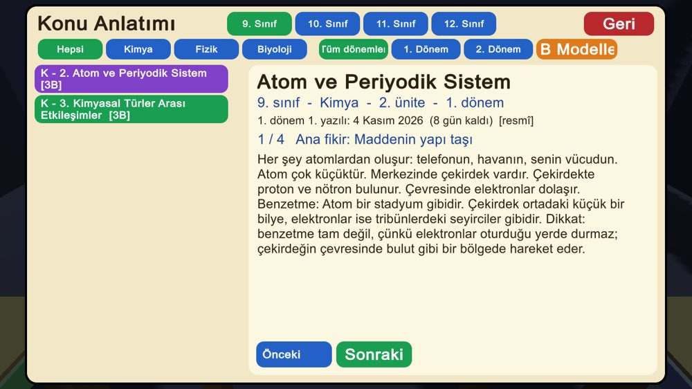
7. Görevler, XP ve seviye
Doğru cevap 10, görevler 10-60, mini oyunlar 20 XP verir. Öğreticiyi bitirmek 25 XP'dir. Her 100 XP bir seviyedir.
XP'yi mağazada harcasan bile seviyen düşmez: seviye toplam kazandığın XP'den hesaplanır, harcama ayrı bir bakiyeden düşer.
Not Defteri bulduğun madde ve ekipmanları, görevleri ve katı deneylerini toplar.
8. Avatarım ve FenLab Pass
Avatarım ekranında yüzünü (ten, göz, ağız) ücretsiz seçersin. Saç, saç rengi, kıyafet, gözlük, şapka, boyun aksesuarı ve arka plan mağazadan alınır.
Bir parçaya tıklayınca önce avatarında denersin. Beğenirsen Satın al (ilk parçalar 30 XP'den başlar), sonra Tak. Elindeki parçaları istediğin zaman değiştirebilirsin.
1500 XP'ye ulaşınca FenLab Pass açılabilir: tüm parçalar bir anda senin olur.
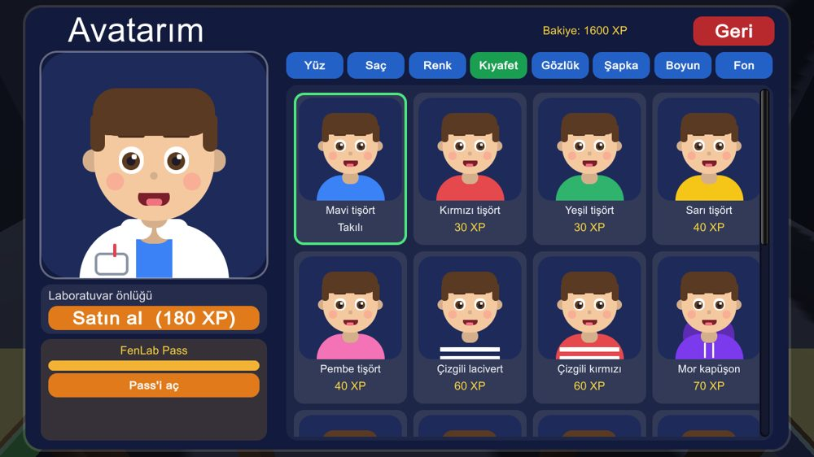
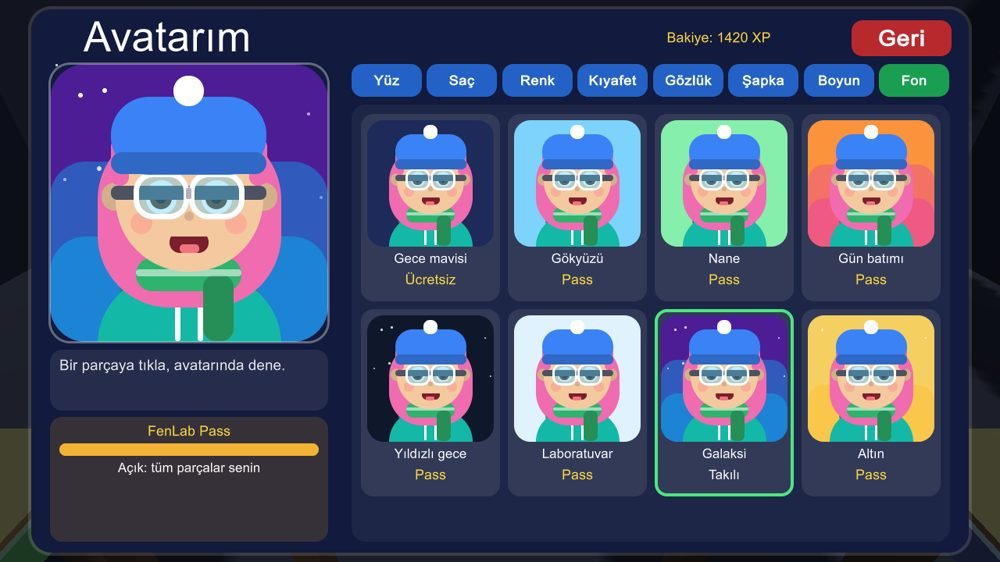
9. Hesap ve bulut kaydı
Menünün sağ üstündeki Hesap düğmesinden giriş yapabilir, çıkabilir ve kaydını eşitleyebilirsin. Google ile girince XP, görevler, avatar ve satın aldıkların buluta kaydedilir.
Çıkış yapınca önce kaydın buluta yüklenir, sonra bu cihazdaki ilerleme silinir (sıradaki öğrenci sıfırdan başlar). Yükleme başarısız olursa çıkış durdurulur.
Hesabımı ve verilerimi sil düğmesi bulut kaydını ve giriş hesabını kalıcı olarak siler. Güvenlik için Google ile bir kez daha giriş ister.
Şifreni hiçbir zaman görmeyiz; Google'dan e-posta ve ad alınır. Ayrıntılar Gizlilik ve telif ekranında.
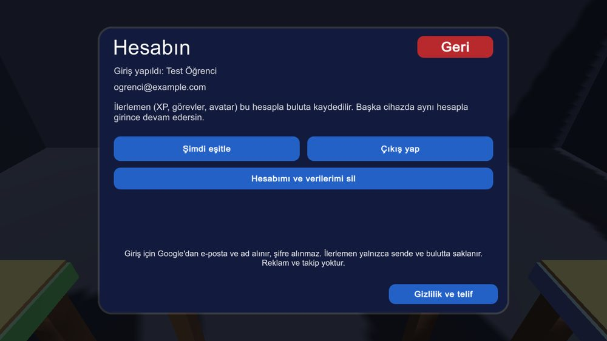
10. Ayarlar ve erişilebilirlik
Ayarlar ana menüden ve ana ekrandan açılır: grafik kalitesi, performans modu (30 FPS), çevrimdışı mod, yazı boyutu, yüksek kontrast (siyah paneller) ve renk körü modu (asit/nötr/baz ayrı renk).
Yazı boyutunu büyütünce tüm arayüz büyür. Yavaş bilgisayarda grafik kalitesini düşük, performans modunu açık yap.
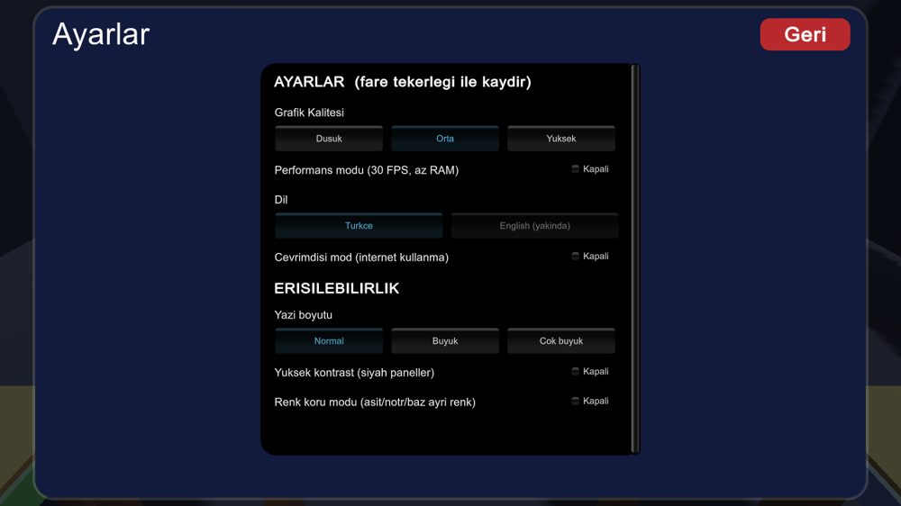
11. Telefon ve tablet
FenLab tarayıcıda çalışır: telefon ya da tabletin Chrome (Android) ya da Safari (iPhone/iPad) tarayıcısında https://qlupala9p.github.io/FenLab-Web/ adresini aç.
Uygulama gibi kurmak için: Android Chrome'da menü > Ana ekrana ekle. iPhone/iPad Safari'de Paylaş > Ana Ekrana Ekle. Yatay tut; dikeyde ekran seni uyarır.
Kimya Laboratuvarı'nda sol altta yön tuşları (^ v < >) etrafa bakmanı, 'Masa 1/2/4' düğmeleri masalar arasında geçmeni sağlar. Parmakla kabı sürükleyip bırakırsın.
Arama çubuğuna dokununca tarayıcının yazı kutusu açılır: madde adını yazıp Tamam'a bas. 3B modellerde ve hücrede + ve - düğmeleri yakınlaştırır; parmağı sürüklemek döndürür.
Telefonlarda grafik kalitesi otomatik düşük açılır. Yavaşlık olursa başka sekmeleri kapat. iPhone/iPad'de çok eski cihazlarda bellek yetmeyebilir; bu durumda bilgisayar kullan.
12. Klavye kısayolları
Ok tuşları: etrafa bak. Tab: fareyle bakma aç/kapat. 1, 2, 4: masalar. Sol tuş: kabı tut/sürükle. Tekerlek: tutulan kabı yaklaştır/uzaklaştır (modellerde yakınlaş). Q / E: eğ. F: çevir. X: kır. E: seçili katıyı seçili kaba at. G: görev panelini aç/kapat. Esc: geri / menü. F1: yardım.
13. Sık sorulanlar
Oyun açılmıyor (web): sayfayı Ctrl+F5 ile yenile; Chrome ya da Edge'in güncel sürümünü kullan.
Google ile giriş çalışmıyor: açılır pencere engelini kaldır; ekranın altındaki mesaj nedeni söyler. 'Bulut izin vermedi' görürsen yöneticiye haber ver.
İlerlemem kayboldu: misafir kaydı yalnızca o cihazda ve tarayıcıda durur. Tarayıcı verilerini silmek ya da başka tarayıcıya geçmek kaydı götürmez. Google ile giriş yapmak bunu önler.
Bir hata buldum: github.com/qlupala9p/FenLab-Web/issues adresine yaz.
© 2026 lupa (Arda Özkır). Bu kılavuz uygulamanın içinde de bulunur (Ana ekran > Kılavuz).